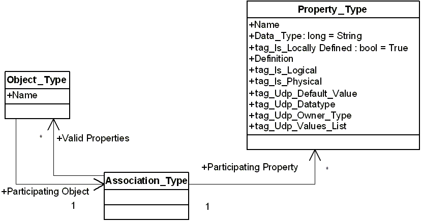

A User-Defined Property (UDP) is an example of a client expanding the erwin DM metadata and involves creating and modifying objects on the metadata level. The structure of the UDP definition is similar to the definition of all native properties. The following diagram shows the metamodel objects involved when you define a UDP:

In this diagram an instance of the Property_Type object defines a UDP class, the Object_Type object defines an object class with which the UDP is associated, and the Association_Type object defines the association between object and property classes.
You are only required to create an instance of the Property_Type object to define a UDP. erwin DM populates the rest of the necessary data. The following table describes the properties and tags of the Property_Type object:
|
Property or Tag Name |
Description |
Valid Arguments |
|---|---|---|
|
Name |
Property, UDP name |
erwin DM upholds the following convention in naming UDPs to ensure their uniqueness. The convention is a three part name separated with dot (.) symbols: <ObjectClassName>.<Logical/Physical>.<Name> An example of this naming convention is: Model.Logical.My UDP The erwin DM editors display only the last component. |
|
Data_Type |
Property, SCVT_BSTR |
The property is read-only and set by erwin DM. All UDP values have a string datatype. |
|
tag_Is_Locally_Defined |
Property, TRUE |
The property is read-only and set to TRUE for all user-defined metadata. |
|
Definition |
Property, Optional |
Optional � Text that displays the UDP description. |
|
tag_Is_Logical |
Tag, TRUE or FALSE |
Optional � The tag has a TRUE value for UDPs used in logical modeling. |
|
tag_Is_Physical |
Tag, TRUE or FALSE |
Optional � The tag has a TRUE value for UDPs used in physical modeling. |
|
tag_Udp_Default_Value |
Tag |
Optional � A string with the UDP default value. |
|
tag_Udp_Data_Type |
Tag |
Defines the interpretation for the UDP value in the erwin DM editors. The valid values are:
The property value can be:
Assumes the Text type if it is not specified. |
|
tag_Udp_Owner_Type |
Tag |
Required. Defines an object class to host instances of the UDPs.
|
|
tag_Udp_Values_List |
Tag |
String with comma-separated values. Only values from the list are valid values for a UDP. Valid only if the tag_Udp_Data_Type tag is set to List. |
//the following example was changed in r9.6, because the
Example 33
The following example illustrates how to use the API to define a UDP using Visual Basic Script:
Dim oAPI
Set oAPI = CreateObject("erwin9.SCAPI.9.0")
Dim oPU
Set oPU = oAPI.PersistenceUnits.Create(Nothing)
Dim oSession
Set oSession = oAPI.Sessions.Add
SCD_SL_M1 = 1
call oSession.Open(oPU, SCD_SL_M1)
Dim TransId
TransId = oSession.BeginNamedTransaction("Create UDP")
Dim oUDP
Set oUDP = oSession.ModelObjects.Add("Property_Type")
' Populate properties
' Add udp with Text type
Set oUDP = oSession.ModelObjects.Add("Property_Type")
oUDP.Properties("Name").Value = "Entity.Logical.My UDP1"
oUDP.Properties("tag_Udp_Owner_Type").Value = "Entity"
oUDP.Properties("tag_Is_Logical").Value = True
oUDP.Properties("tag_Udp_Data_Type").Value = 2
oUDP.Properties("tag_Udp_Default_Value").Value = "Text"
oUDP.Properties("tag_Order").Value = "1"
'Add udp with list type
Set oUDP = oSession.ModelObjects.Add("Property_Type")
oUDP.Properties("Name").Value = "Entity.Logical.My UDP5"
oUDP.Properties("tag_Udp_Owner_Type").Value = "Entity"
oUDP.Properties("tag_Is_Logical").Value = True
oUDP.Properties("tag_Udp_Data_Type").Value = 6
oUDP.Properties("tag_Udp_Values_List").Value = "1,2,3"
oUDP.Properties("tag_Udp_Default_Value").Value = "1"
oUDP.Properties("tag_Order").Value = "1"
' Commit changes
oSession.CommitTransaction (TransId)
' Release the session
oSession.Close
Set oSession = Nothing
oAPI.Sessions.Clear
' Save to the file
Call oPU.Save("C:\Temp1\UDP.erwin", "OVF=Yes")